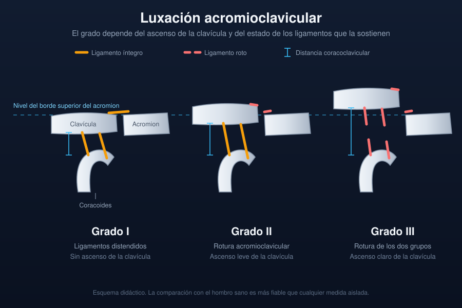

Ficha del catálogo
Luxación acromioclavicular
- Sistema
- Óseo
- Modalidad
- RX
- Región
- Hombro
- Dificultad
- Básico
La separación de la articulación acromioclavicular se produce por una caída directa sobre el muñón del hombro y es frecuente en deportes de contacto y en ciclistas. La gravedad depende de si solo se lesionan los ligamentos acromioclaviculares o si además se rompen los coracoclaviculares, que son los que sostienen la clavícula. El grado de ascenso clavicular determina si el tratamiento es conservador o quirúrgico. La exploración muestra una prominencia del extremo distal de la clavícula que se reduce al presionar.
Técnica
Proyección anteroposterior del hombro con menor penetración que la habitual e inclinación craneal ligera, que despliega la articulación. Es útil incluir ambos lados en una sola imagen para comparar.
Qué observar
- Ascenso del extremo distal de la clavícula respecto al borde superior del acromion
- Aumento del espacio acromioclavicular comparado con el lado sano
- Aumento de la distancia entre la coracoides y la clavícula
- Fractura asociada del extremo distal de la clavícula o de la coracoides
- Desplazamiento posterior de la clavícula, mejor visto en proyección axial
- Calcificación de los ligamentos coracoclaviculares en lesiones antiguas
Hallazgos
Ascenso del extremo distal de la clavícula con ensanchamiento del espacio acromioclavicular y aumento de la distancia coracoclavicular en los grados altos.
Perlas
La comparación con el hombro contralateral es más fiable que cualquier medida absoluta porque la distancia coracoclavicular varía mucho entre personas. Un aumento superior al 25 por ciento respecto al lado sano indica rotura de los ligamentos coracoclaviculares.
Diagnóstico diferencial
- Fractura del tercio distal de la clavícula
- Hay trazo óseo y la articulación conserva su relación.
- Luxación glenohumeral
- El desplazamiento afecta a la cabeza humeral y no a la clavícula.
- Osteólisis del extremo distal de la clavícula
- Erosión progresiva sin traumatismo agudo, típica de esfuerzos repetidos.
Simuladores
- Rotación del paciente que simula ascenso clavicular
- Variante anatómica con acromion descendido
- Artrosis acromioclavicular con ensanchamiento aparente
Por modalidad
- RX
- Diagnóstico y graduación en la mayoría de los casos
- TC
- Aclara desplazamientos posteriores y fracturas asociadas
- RM
- Muestra el estado de los ligamentos y del disco articular
Protocolo
Anteroposterior con inclinación craneal y estudio comparativo de ambos hombros. Proyección axial cuando se sospecha desplazamiento posterior.
Clasificación
La clasificación de Rockwood distingue seis grados según la integridad de los ligamentos y la dirección del desplazamiento clavicular. Los tres primeros suelen tratarse sin cirugía.
Errores frecuentes
- Usar una técnica demasiado penetrada que oculta la articulación
- No comparar con el lado contralateral
- Confundir una artrosis acromioclavicular crónica con una lesión aguda

hombro acromioclavicular rockwood coracoclavicular clavicula deporte luxacion